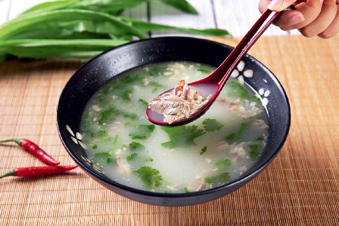

古人给我们留下了大量的经典名方，这都是历朝历代不知道多少人亲身实践出来的，后来很多都制成了中成药。
因为古人给这些经典名方取的名字都比较文雅和含蓄，而且是有讲究在里面的，所以对于现代人来说，有时候就看不懂，不知道这个药到底是治什么病的，买回去也不了解药的服用方法，比如，有的说明书写得很简单，就是什么开水送服。
其实，中成药要发挥一个完整的功效，有时候需要淡盐水送服，有时候需要黄酒送服，有时候甚至需要肉汤来送服。
您觉得中成药吃了半天没什么效果，原因可能就是服用的方法不那么恰当。
古人认为，春、夏、秋、冬四季的风不同，伤害的脏腑也不同，表现出来的发病部位也有侧重。
《黄帝内经》里记载:“北风生于冬，病在肾，俞在腰股。”“俞”（shù）是“捷径”的意思，现多写作“腧”。
什么意思呢？冬天的风，伤害的是我们的肾脏系统，而最容易发病的部位就是腰部和腿部。
在冬天的时候，腰痛、腿痛、关节炎等病都很容易发作，有时候甚至比天气预报还准。如果病人感觉到腰痛、腿痛，那就说明要刮大风了，这都跟人体外部的风和人体内部的风有关系。
《易经》里有一句话，“云从龙，风从虎”。龙代表水，虎代表风。了解了这个，您再来看一些中药方子或者中成药的药名，就会觉得特别好理解。
药方名带有龙字的，往往跟水有关系；而药方名带有虎字的，往往跟风有关系。
像出自《伤寒论》里的青龙汤、白虎汤，都是非常有讲究的。青龙汤是发汗，治寒痰的。古方里还有乌龙汤，可以治疗糖尿病引起的蛋白尿；白龙汤，可以治疗男子遗精；伏龙汤，可以治疗孕妇咳嗽。
还有一个古方叫龙化丹，它是一种专门用来治疗小孩子耳朵后面长湿疹的外用药，配方中有炉甘石，现在皮肤科一个常用的洗剂就是炉甘石洗剂。
湿疹是由湿气、湿毒引起的，严重的时候还会流水，所以“龙化丹”这个名字起得非常形象——可以化掉“龙”带来的水。
说到龙化丹，就不得不提一个常用的中成药——虎潜丸。老虎的虎，潜伏的潜，您看，龙化、虎潜，这名字起得多有文采啊!在古代，要是没点文化底子，都不好意思当医生。
虎潜丸这个方子，出自元代大名医朱丹溪之手，主要治疗中风后遗症、风湿性关节炎。
这个方子非常好用，所以一直沿用了下来，出了好几种中成药，比如，同仁堂原来有“健步虎潜丸”，现在改名叫“健步强身丸”。这个您去药店就可以买到，它的盒子上画着一只老虎。
这个药用来干吗呢？比如，老年人的风湿性关节炎，由于肝、肾阴虚引起的四肢无力，特别是两腿酸软、发麻，走路没有力气，站都站不住的这种症状，它都可以治疗。对于腰腿痛，关节痛，手脚、四肢的痛，还有头痛，也都可以治疗。有一些大病也会用到它，如瘫痪、肌无力、强直性脊柱炎。

骨质疏松症是中老年人的常见病，特别是糖尿病人和处于更年期的朋友，很容易骨质疏松。所以，老年人半夜起夜，不小心摔了一跤后就容易骨折。
我们要想预防骨质疏松，真的要及早开始，最好是从年轻的时候就开始，而大雪节气喝的大补养藏汤，就是强筋壮骨的。
如果您家里有人得了严重的骨质疏松症，或者关节炎，或者刚做过腰椎间盘、膝关节等骨科手术，处在恢复期，医生给开了虎潜丸或者健步强身丸这些中成药，我建议您一定要注意其正确的吃法。
其实，虎潜丸的原方是要做成羊肉丸子来吃的。把方子里的中药全部捣成粉末，然后把羊肉煮熟，再把羊肉跟这些药粉掺和在一起，做成丸子，用淡盐水来送服。
您要是吃这个中成药，可以煮一锅羊肉汤，放一点点盐，因为盐有引药入肾经的作用，然后用羊肉汤来送服。
如果病人气很虚，不想说话，那就在羊肉汤里放一点山药，效果会更好。
其实，药和食本来就是不分家的，您在吃药的时候，如果有恰当的饮食来配合，那效果就会如虎添翼。
读者评论：照老师讲的去做，小病小痛都不用上医院
张平华：自从在“百科全说”栏目认识陈老师后，我们全家的小病小痛都按照老师讲的去做，都不用上医院。前段时间我妈腰痛，也是用了老师在“喜马拉雅”上讲的健步强身丸，吃了一瓶就好了。